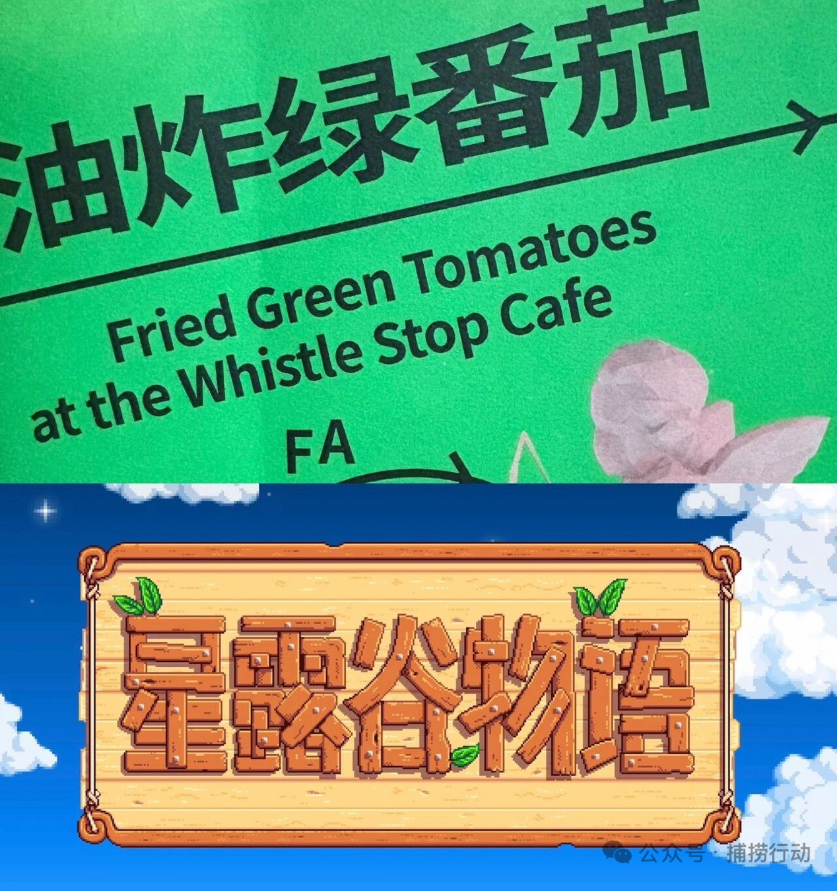
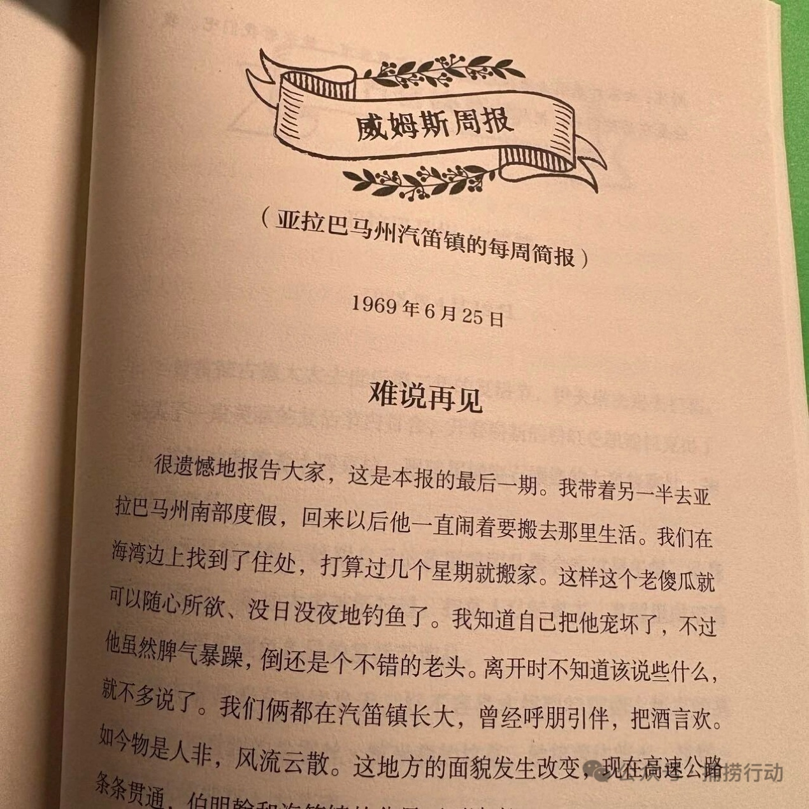
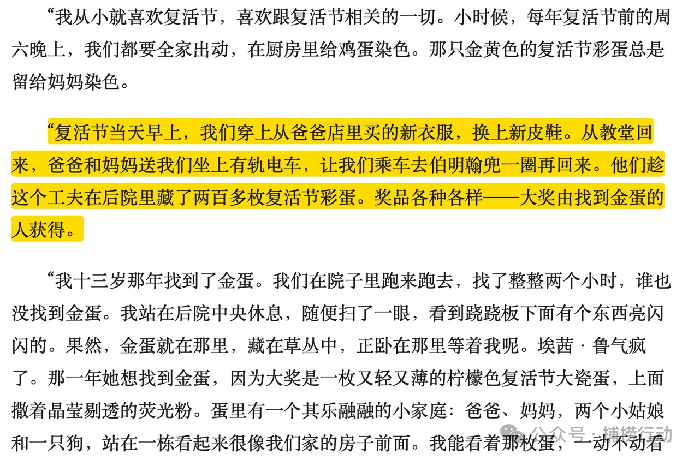
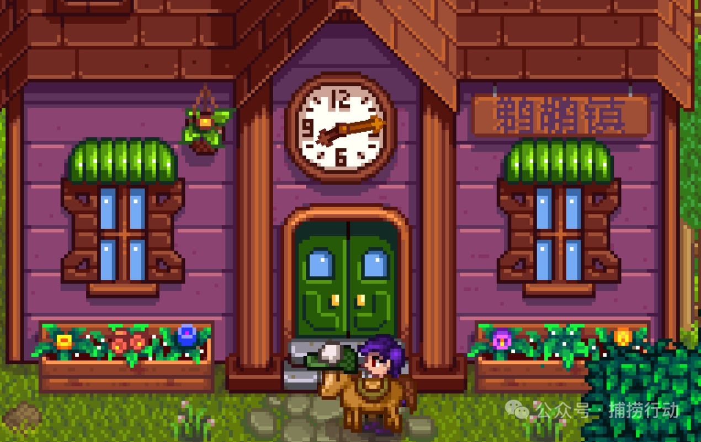
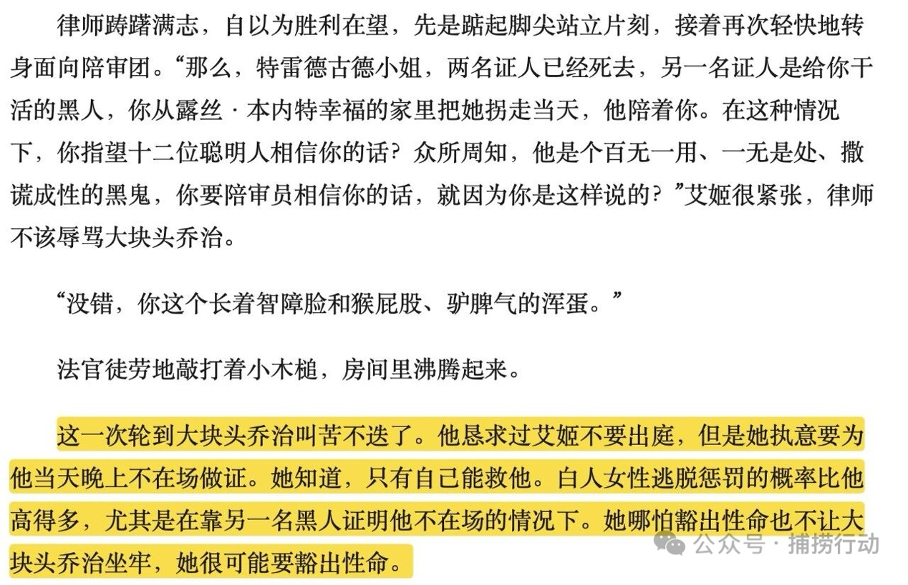
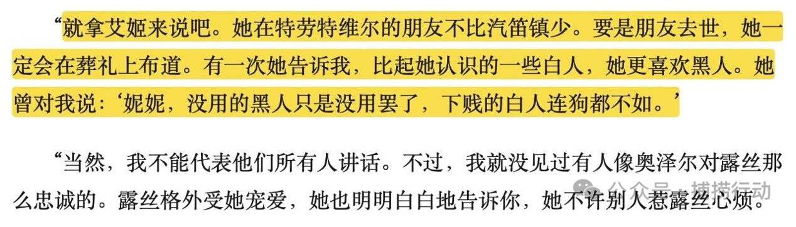
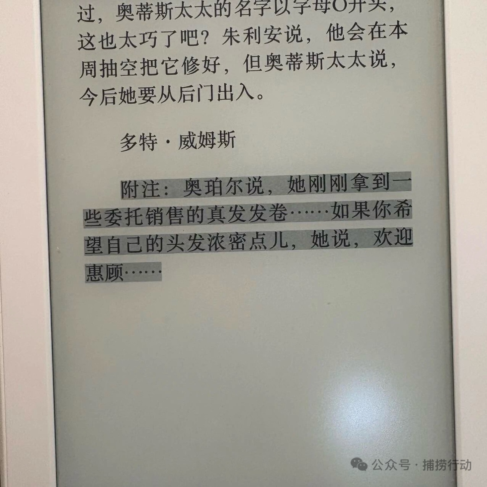
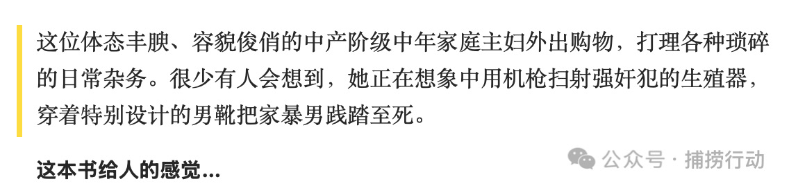
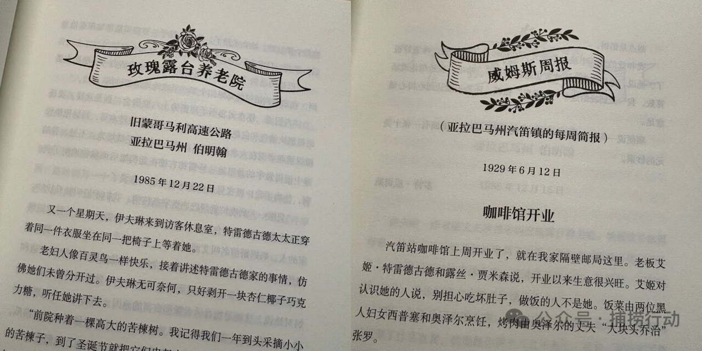

这的确是非常“星露谷”的一本书
从《星露谷物语》读进《油炸绿番茄》，比较两部作品中的小镇共同体、平等愿景与乌托邦裂缝。
全文阅读

《油炸绿番茄》是一本不算薄的书，但每个章节都很简短，像收集了亚拉巴马州20世纪20年代-80年代的各地报纸的剪报片段拼成一个完整的故事。读来有趣轻松。
故事主要有两条线，一条讲过去发生在汽笛镇，围绕铁轨边汽笛镇咖啡馆的故事。咖啡馆由艾姬和她的爱人露丝（一对女女爱人）一起经营，她们救助流浪汉。在四五十年代黑人广泛受歧视、不能和白人一起用餐、坐一个车厢的南方保守州的小镇，她们悄悄从咖啡馆后门给黑人提供食物。艾姬还偷偷夜里去劫经过的火车，把获取的食物都丢在和咖啡馆隔着一条铁轨的黑人聚居区。

60年代，火车停运，铁轨停用。汽笛镇的人都离开故土，咖啡馆也不再经营。80年代，经历过汽笛镇那个友爱、团结、平等的年代的妮妮·特雷德古德住进了养老院，在这里她遇到了自己的忘年交：伊夫琳。伊夫琳是一个忍受了多年家庭生活的中产阶级女人。到了“更年期”，她开始感到愤怒、感到不安和焦虑、感到找不到生活的支点。随着丈夫来玫瑰露台养老院看望婆婆时，她认识了妮妮。妮妮用汽笛镇的故事治愈了她，鼓励她离开当下的环境、去寻找自己的价值、去买自己的粉色凯迪拉克。
01 真的很“星露谷”
打开这本书最初的动力是，看到有人发帖子，说这本书特别“星露谷”。我看完之后觉得这是真的。
首先是从字面上，汽笛镇上有叫哈德利的医生（就像星露谷里的哈维），有跳火车的流浪汉斯莫金（星露谷里的莱纳斯），有从外地来的姬圈天菜露丝（我觉得她有点海莉），有经常从镇子经过的火车（鹈鹕镇也会有火车经过，还会有掉落物，难道星露谷的火车上也有“艾姬”吗），汽笛镇的“东方之星”宴会就像星露谷春日舞会，到了复活节，汽笛镇的特雷德古德家特会把复活节彩蛋藏起来喊小孩来找（星露谷里，玩家也可以参与找彩蛋拿奖品的复活节活动）......可能这是因为鹈鹕镇和汽笛镇都是很经典的美国小镇图景吗？字里行间，真的有很多相似之处。

再者，某种意义上，星露谷和这本书传递的都是某种美国左翼自由主义乌托邦的愿景：星露谷里，角色可以跟任意性别相同或者不同的单身npc结婚；《油炸绿番茄》里，艾姬和露丝更是大家默认的“一对”。此外还有小社区的团结和共建：汽笛镇大家都是互相帮助的，当地警长兼铁路侦探格雷迪就疑似有帮助艾姬掩盖她劫火车的行为，还去帮忙到监狱里捞黑人阿蒂斯；星露谷也推崇玩家参与社区的共建，比如向社区中心献祭、帮潘妮建房子等。

最后，可能因为《油炸绿番茄》的作者来自亚拉巴马州，是非常保守的州，50年代那里的种族问题很突出，所以在书中，对于汽笛镇种族平等的描写也有很多。比如在被怀疑杀害露丝前夫弗兰克时，被告上法庭时，艾姬本可以选择不出庭，但她坚持要出庭为黑人乔治做不在场证明；再比如黑人聚居区奥西杂货店的店主是妮妮的好朋友；妮妮向伊夫琳讲述时也强调，她遇到过的黑人都很好......


02 从语言风格上看？
从语言风格上，这本书和星露谷的呼应之处在于：很多地方，你会觉得作者的遣词造句方式不“现实”，但也不是完全假和不真实，所以有时候真的就让人有一种游戏、戏剧化和荒诞的感觉，但同时她描述的又是汽笛镇日常的生活。所以，也有可能是这本书在美国南方小镇实现同性恋合法、种族平等的左翼乌托邦与星露谷不谋而合，其中有些句子就真的会有点像会出现在鹈鹕镇村民寄给玩家的信中，或是与npc的对白中的。

然而，这本书也不是全然只在描写那些在小镇里美好的人事物，字里行间会透露出除汽笛镇以外的地方、整个社会对黑人的歧视和不友好，与汽笛镇和睦友好的氛围形成对比，更强化了镇子里人人平等的乌托邦景象。就好像384的爸爸德米也说：“我们在星露谷物语中与世界其他地方隔绝。也许这是件好事。”
在《油炸绿番茄》这本书中，哪怕有很残酷的事情，因为作者描述的方式有时候幽默的讲述方式，你也会觉得那个是荒诞，而不是现实主义的残酷。我对这本书整体上的印象，就像作者在描述伊夫琳在杂货店莫名其妙被小青年骂“婊子”之后终于对自己作为女性、女儿、妻子的处境感到愤怒、开始反思之后的那段话一样：
“这位体态丰腴、容貌俊俏的中产阶级中年家庭主妇外出购物，打理各种琐碎的日常杂务。很少有人会想到，她正在想象中用机枪扫射强奸犯的生殖器，穿着特别设计的男靴把家暴男践踏至死。”

是的，这本书看似描绘了一个乌托邦的小镇，但字里行间你会感知到那是一个岌岌可危的乌托邦，像是随时就可以被打破的幻梦一样，你不知道作者会在哪一句戳破这个美梦。
P.S. 这本书的实体版，给每个章节的标题都加了特别的花框。比如“玫瑰露台养老院”的章节，会在标题上加有花元素的框，而“威姆斯周报”章节，则是草元素的。电子版并没有这样的细节，这真是实体书给人带来的惊喜！

注：本文关于星露谷的“乌托邦”观点来源于：Mackay, O. E. L., & Roberts, C. A. (2025). Peace in the Valley: A Media and Discourse Analysis of Eric Barone’s Stardew ValleyThrough Utopian Theory. Games and Culture, 20(1), 3–19.